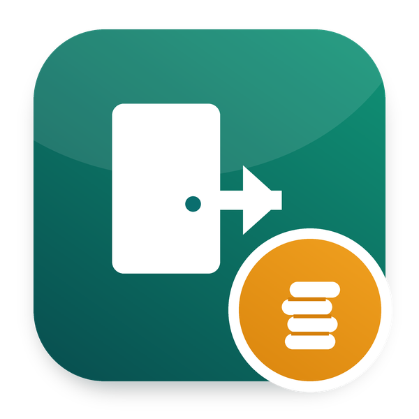

This app is part of Odoo 20 HRMS - Odoo Mates: the whole HR suite in one download, 62 modules for Odoo 20. Payroll, loans, exits and gratuity, documents and signatures, appraisals, shifts, approvals, the employee portal. Download once, install only what you need.
Get Odoo 20 HRMS - Odoo Mates, every app at once →
The final settlement payslip of an exit: last salary, unused time off, gratuity, loans still due
Part of Odoo 20 HRMS - Odoo Mates · Odoo 20 Community and Enterprise
The payslip of the last month, up to the last working day of the exit
The days left on the time types paid out at the exit, at the daily wage
With HR Gratuity and HR Loans in Payroll: the gratuity paid, the loans deducted
LEAVE_ENCASH, category Allowance).GRATUITY, category Allowance).Works with Odoo 20 Community and Odoo 20 Enterprise. On Enterprise, it cannot be installed together with the Enterprise Approvals and Payroll apps: both define the same records. Use one or the other.
om_hr_exit, om_hr_payroll. It installs by itself once they are all installed.
Odoo Mates HR
The HR suite of Odoo Mates for Odoo 20: every module installs on its own, the links between them are bridges.
Support: odoomates@gmail.com